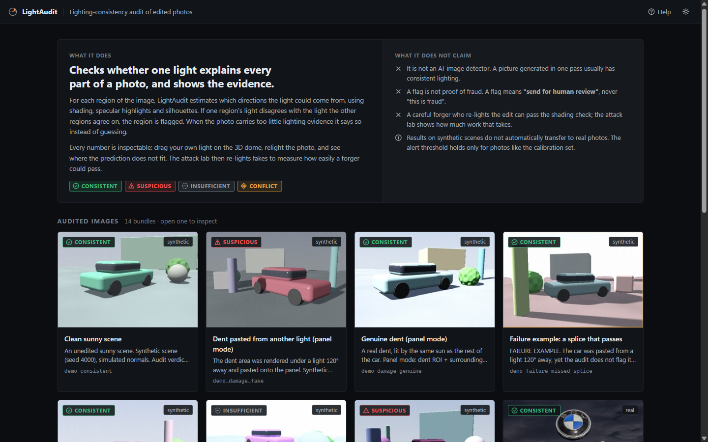
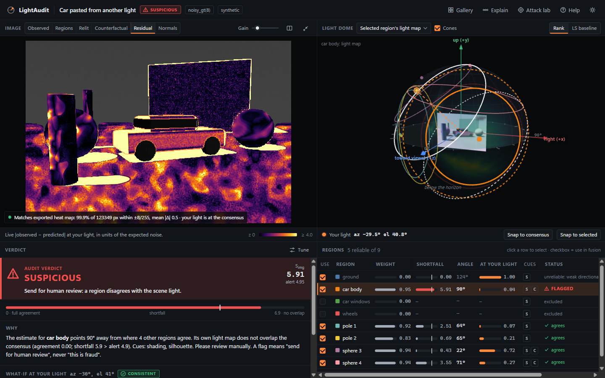
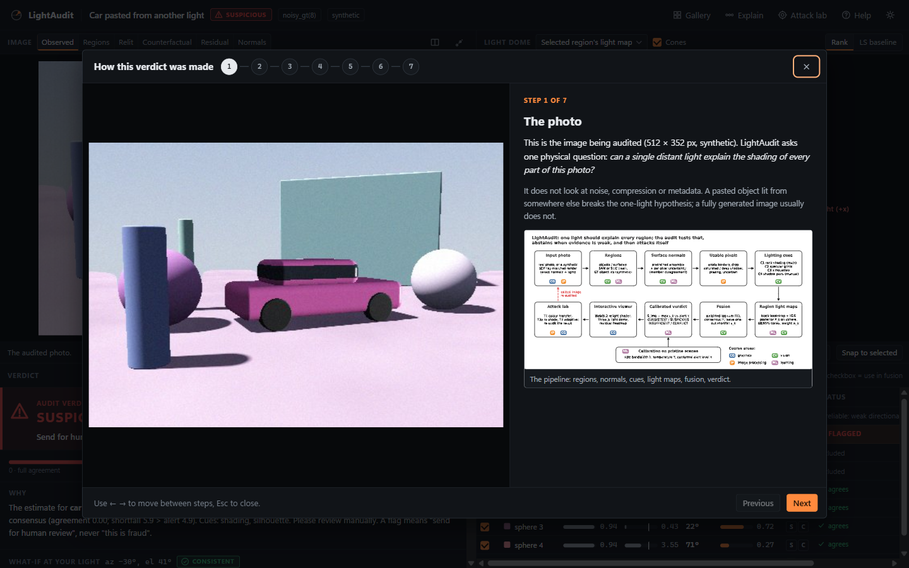
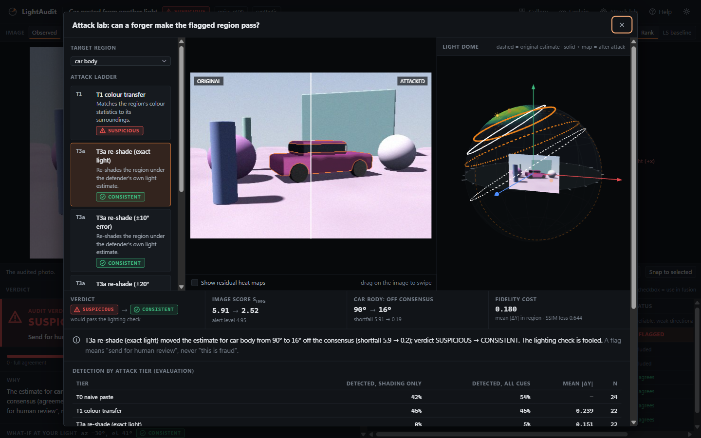
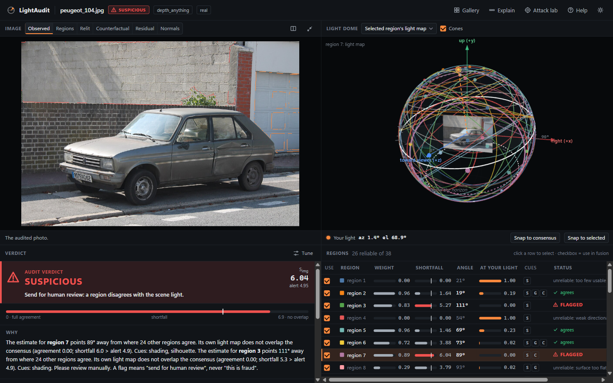
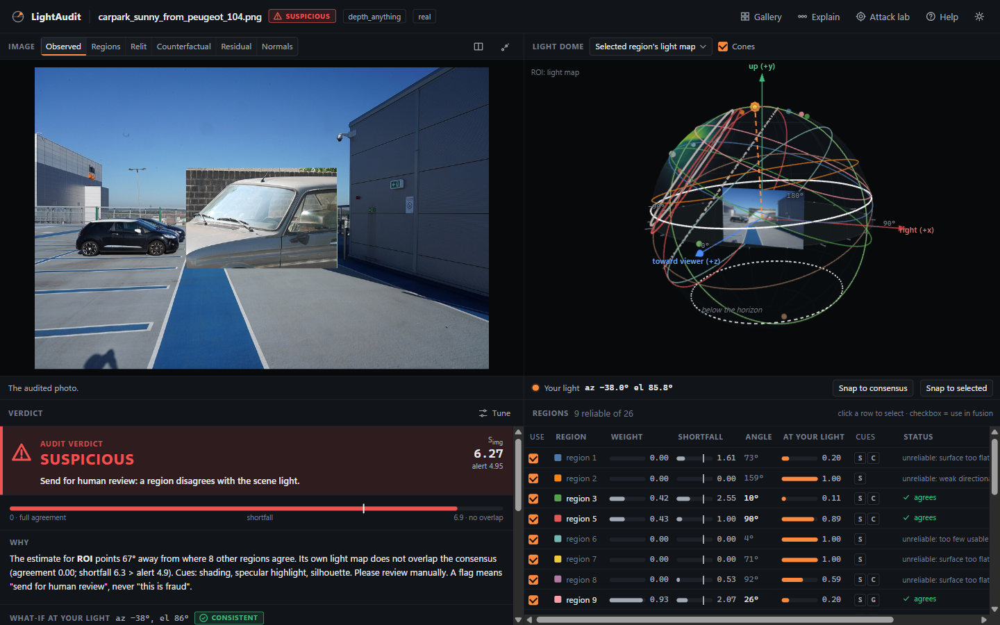

LightAudit checks one physical thing: does a single light direction explain every part of a photo? If an object was pasted in from a photo with different lighting, its shading points to a different light. The tool estimates the light for each region, compares the regions, shows the evidence in an interactive 3D viewer, and attacks itself to see how easily a forger could pass. A flag means "send for human review", never "this is fraud".
git clone https://github.com/Barath-BDK/LightAudit # or unzip LightAudit.zip cd LightAudit Set-ExecutionPolicy -Scope Process Bypass .\setup.ps1 # creates .venv, installs dependencies .\.venv\Scripts\python.exe -m lightaudit.cli serve # starts the viewer # open http://127.0.0.1:8000 in a browser
The demo and real-photo results are already in bundles/, so the viewer shows them immediately.
The first load of a result takes a few seconds.
| What | Command (prefix each with .\.venv\Scripts\python.exe) |
|---|---|
| Run the tests | -m pytest |
| Audit your own photo | -m lightaudit.cli audit --image data\real\photo.jpg --regions sam --normals depth_anything --htmlor the "Upload a photo" card in the viewer gallery |
| Audit a damage area only | add --roi mask.png (white = the area to check) |
| Rebuild the demo results | -m lightaudit.cli demo-bundles |
| Recalibrate | -m lightaudit.cli calibrate --n-cal 200 |
| Evaluation (quick / full) | -m lightaudit.cli eval --suite quick / --suite full |
| Figures, tables, report | -m lightaudit.cli figures then -m lightaudit.cli report |
| Everything in one go | .\run_all.ps1 -Quick (not yet run as one script) |
A real photo takes about 5–7 minutes on CPU. For the 5-minute demo walk-through see docs/DEMO_SCRIPT.md.
| Part | Where | State |
|---|---|---|
| Core library, command line | lightaudit/ | working |
| Synthetic scene renderer with ground truth | lightaudit/synth/ | working |
| Web viewer (3D light dome, live relighting, explain stepper, attack lab) | viewer/ | working |
| Server with photo upload | lightaudit/server.py | working (upload tested once) |
| Results the viewer loads: 7 demos, 6 real photos, 1 real splice | bundles/ | built |
| Real-photo path (Segment Anything, Depth Anything) | lightaudit/normals.py, regions.py | runs; results unreliable |
| Evaluation E1–E10, figures F1–F9, tables | eval/, data/results/, docs/figures/ | quick suite only |
| Tests: 60 Python tests + browser/Python parity check | tests/, viewer/tests/ | all pass |
| Docs, report, slides, demo script, build log | docs/, report/, README.md, BUILD_LOG.md | written |
| Real test photos (Wikimedia Commons, CC BY / CC BY-SA) | data/real/ | 6 photos + 1 splice |







| Demo | Intended | Actual |
|---|---|---|
| Clean sunny scene | CONSISTENT | CONSISTENT |
| Car pasted from another light (120°) | SUSPICIOUS | SUSPICIOUS |
| Genuine dent | CONSISTENT | CONSISTENT |
| Dent pasted from another light | SUSPICIOUS | SUSPICIOUS (took 10 scenes to find one that is caught) |
| Two suns | CONFLICT | CONSISTENT |
| Overcast | INSUFFICIENT | INSUFFICIENT (took 12 scenes) |
| Failure example: 120° splice | a miss, on purpose | CONSISTENT (missed) |
| Question | Result |
|---|---|
| Accuracy of our rank-based light estimate against a simple least-squares baseline | about 22–26° median error against 6–8°: ours is worse |
| Detection of a pasted car (AUC, 0.5 = chance) | 0.65 with all cues; 0.71 with least squares |
| Detection of a pasted dent | 0.40, at chance |
| Calibration: does the 68% / 95% region contain the true light? | 0.66 / 0.93 |
| Attack by colour matching | does not fool it (0.45 before and after) |
| Attack by re-shading to the scene light | detection falls to 0–0.05 |
| Downscaled images | detection falls from 0.8 to 0.2 |
| Overcast and two-light scenes | mostly not recognised as such |
| Photo (all unedited) | Verdict | Correct? |
|---|---|---|
| airfield_car | CONSISTENT | yes |
| carpark_sunny | CONSISTENT | yes |
| mini_parking | SUSPICIOUS | false alarm |
| peugeot_104 | SUSPICIOUS | false alarm |
| street_car | SUSPICIOUS | false alarm |
| supermarket_carpark | SUSPICIOUS | false alarm |
One real splice (a rectangle of the Peugeot pasted into the car-park photo) was flagged, 67° off the consensus. With four false alarms in six clean photos, that single detection is weak evidence.
| # | Step | Why | Effort |
|---|---|---|---|
| 1 | Make least squares the default cue (agreed next step), then recalibrate, rebuild the demos, re-evaluate | It is about three times more accurate in our tests | 1.5–2 h of compute |
| 2 | Try a hybrid: least squares for the estimate, rank as a cross-check | Keeps the tone-curve robustness where it helps | half a day |
| 3 | Install geffnet so DSINE runs, and use both normal estimators together | Better surface directions for real photos | minutes + re-run |
| 4 | Recalibrate the alert threshold on 20+ unedited real photos (tools/calibrate_on_folder.py) | The synthetic threshold does not transfer | about 2 h of CPU |
| 5 | Merge small regions and skip textured or shadowed ones on real photos | Fewer spurious outliers among 20–40 regions | half a day |
| 6 | Run the full evaluation | Narrow the confidence intervals | 1–2 h of compute |
| 7 | Fix abstention for overcast and two-light scenes | The tool should say "cannot tell" there | a day |
Whatever changes, the report should keep stating the results as measured, including the rank cue's loss.
The photo in the middle of the light dome was drawn upside down. That was a bug in the viewer and is fixed; the screenshots above were taken after the fix.